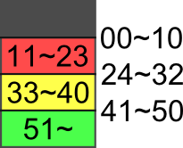

救急: マリア・トレスFirst Response: Maria Tores
- 現在書きかけにつき、記述内容やデータが正しくない場合があります。
- TIPS
-
テーピング
火傷と裂傷の処置の違いは、最後のテーピングの角度にある。
火傷は角度を問わず、さらに複数まとめてテーピングすることが可能。裂傷の場合は裂傷と水平になるようにテーピングしなければいけない。
そこで、テーピングを選択した時の矢印ガイドを目印にする。この矢印と重ねるようにテーピングすれば容易にCOOL判定が取れるだろう。ガイドを再び出したい時は、適当な器具に変えてから再びテーピングにすれば表示される。
骨折の矯正
骨の矯正については、チュートリアルでゆっくり動かせと言っているが間違い。正しくは掴んだら一気に動かす。動かしすぎてもミス等のペナルティは無いので思いっきりやろう。掴んでいる時間に比例してバイタルが減るので、下手にもたもたすると逆に危険になってしまう。
救助完了後の移動先
救助が完了すると、トリアージタグで左に隣接した患者へ移るようになっている。スペシャリストでは切り替え回数を最小限に抑える必要があるので必須。
トリアージタグ
右の数字はタグが半分取れ欠けている状態のバイタルを表す。

包帯のコツ
Wiiリモコンを回すのではなく、左右へ激しく振る。
時間停止
心臓マッサージ・胸部叩打・AED・気道確保・はさみ使用中は他の患者のバイタルは減少しないので、ゆっくり確実に行おう。
- 2険悪MOOD/Foul Mood
-
Infomation
- 初期傷病者数 2
- 総傷病者数 2
- LIMIT 1
Patients
一人目：緑
- 胸部：血溜まり x 3
- 腹部：熱傷 x 2
- 左腕：熱傷 x 2
- 右腕：輸血
二人目：赤
- 胸部：熱傷 x 3
- 痙攣（バイタル-18）
- 心臓マッサージ
- 気道確保
- 右腕：輸血
Special Bonus
条件 Intern Resident Specialist MISS判定ゼロ 0 - - 熱傷を悪化させない - - - COOL判定@回以上 5 7 8 脱脂綿をオートで捨てさせない - - - Operation Rank
ランク Intern Resident Specialist C ～7099 ～7099 ～7399 B 7100～7999 7100～8099 7400～8199 A 8000～8799 8100～8999 8200～9099 S 8800～ 9000～ 9100～9449 XS - - 9450～ XS Time Limit
GOODの数 クリアタイム 0 50秒 XS Guide
制限時間50秒だが、熱傷の複数テーピング、一つの脱脂綿で血溜まりを2つ除去できることを抑えれば時間に余裕を持ってクリアできるだろう。
傷病者数は2人且つ、二人目はバイタル多めなので切り替えずに処置していくだけでよい。
二人目の熱傷へテーピングする際はバイタルに気をつけよう。心臓マッサージ中のバイタルも考えると、できれば27以上は欲しい。
XS Talk
マリア「ぬはははっ、見たか！アタシの処置はパーペキだぜっ！」
Movie

- 3苛立ちMAX/Maximum Annoyance
-
Infomation
- 初期傷病者数 2
- 総傷病者数 4
- LIMIT 1
Patients
一人目：青
- 右腕：骨折
TALK後に四人目追加
二人目：鉄骨
- 鉄骨、血溜まり x 2
- 輸血
油圧カッター選択後に三人目追加
三人目：緑
- 腹部：ガラス片 x 3
- はさみ
- 腹部：切り傷 x 2、血溜まり x 3
- 輸血
四人目
- 右足：ガラス片 x 3
Special Bonus
条件 Intern Resident Specialist MISS判定@回以下 6 3 1 全ての患者を搬送する - - - COOL判定@回以上 5 7 8 骨の矯正で@回以上途中で放さない 3 3 2 Operation Rank
ランク Intern Resident Specialist C ～6999 ～7299 ～7699 B 7000～7599 7300～8099 7700～8399 A 7600～8499 8100～8999 8400～9099 S 8500～ 9000～ 9100～9399 XS - - 9400～ XS Time Limit
GOODの数 クリアタイム 0 1分00秒 XS Guide
時間制限が厳しいので無駄な切り替えを行わないように。
まずは一人目。骨折は素早く動かして元の位置に戻す。会話を忘れずに行ってから救助完了。
二人目は油圧カッターが必要になるので、油圧カッターを選択したらバイタルを65ぐらいまで回復しよう。作業完了までしばらくかかるので、その間に三人目に取りかかる。
頃合いを見て二人目に戻って救助完了まで持っていきたいが、作業速度は個人差があるので、何回か試して丁度油圧カッターが終わる頃合いを掴もう。
油圧カッターの傷病者を救助まで持っていったら、後は三人目・四人目と順に処置すればよい。
XS Talk
ダネル「お疲れ様でした、ドクター・トレス。今回も完璧な処置でしたね」
マリア「ヘヘッ、ザッとこんなモンよ！ アタシはパーペキな女だからなっ！」Movie

- 4哀しいHERO/Mournful Hero
-
Infomation
- 初期傷病者数 3
- 総傷病者数 5
- LIMIT 2
Patients
一人目：紫
- 心臓マッサージ
- 一定時間経過で心臓停止 → 心臓マッサージ
- 一定時間経過で心臓停止 → 心臓マッサージ
二人目：灰
- 左腕：止血、血溜まり x 2、裂傷 x 1
TALK後五人目追加
三人目：紫
- はさみ
- 右腕：熱傷 x 4
四人目：橙
2人救助で追加。
- 気道確保
- 胸部叩打
五人目：黄
- 腹部：血溜まり x 3
- はさみ
- 血溜まり x 2、裂傷 x 2
- 気胸
Special Bonus
条件 Intern Resident Specialist MISS判定@回以下 7 4 2 全ての患者を搬送する - - - COOL判定@回以上 12 14 16 胸部叩打で@回以上打撃しない 3 3 2 Operation Rank
ランク Intern Resident Specialist C ～8299 ～8999 ～9599 B 8300～9099 9000～9999 9600～10299 A 9100～9999 10000～10999 10300～10999 S 10000～ 11000～ 11000～11499 XS - - 11500～ XS Time Limit
GOODの数 クリアタイム 0 2分00秒 XS Talk
マリア「クソ…こんなモンか…アタシは…こんな…！」
Movie

- 5戸惑いGHOST/Hesitant Spirit
-
Infomation
- 初期傷病者数 4
- 総傷病者数 6
- LIMIT 2
Patients
一人目：紫
- ガラス片 x 3、熱傷 x 3
処置が進行すると五人目が追加されてTALK可能になる。TALK後六人目追加。
二人目：深緑
- 血溜まり x 3、熱傷 x 5
- 心臓マッサージ
- 気道確保
三人目
- 左足：血溜まり x 3
- はさみ
- 右足：止血、血溜まり x 3、裂傷
四人目：黄
- 腹部：熱傷 x 3
- 右腕：熱傷 x 2
- 左腕：熱傷 x 1、裂傷 x 1
五人目：鉄骨
- 鉄骨
- 輸血
六人目：赤
- 左腕：血溜まり x 2、熱傷 x 3
- 右足：骨折
Special Bonus
条件 Intern Resident Specialist MISS判定@回以下 6 3 2 全ての患者を搬送する - - - 熱傷を悪化させない - - - 熱傷を@個以上まとめてテーピング 2 2 3 Operation Rank
ランク Intern Resident Specialist C ～9999 ～10999 ～10999 B 10000～10999 11000～11999 11000～12099 A 11000～11999 12000～12999 12100～12999 S 12000～ 13000～ 13000～13499 XS - - 13500～ XS Time Limit
GOODの数 クリアタイム 0 3分20秒 1 2分50秒 XS Talk
ゲイブ「エ～クセレント。凄いじゃないか、賞賛に値するぜ？」
マリア「ヘッ…わざとらしいんだよオメェは。ま、ザッとこんなモンさ。」Movie

- 6決死のRESCUE/Desperate Rescue
-
Infomation
- 初期傷病者数 5
- 総傷病者数 8
- LIMIT 3
増援イベントが発生すると、全傷病者のバイタルが最大値まで回復。
Patients
一人目：緑
- 心臓マッサージ
- 一定時間経過で心臓停止 → 心臓マッサージ
- 一定時間経過で心臓停止 → 心臓マッサージ
- 気道確保
二人目：水
- はさみ
- 腹部：血溜まり x 2、裂傷 x 3
- 左肩：血溜まり x 2、裂傷 x 1
腹部処置完了後に増援イベント。
三人目
- ガラス片 x 4、裂傷 x 4
裂傷を3つ処置すると増援イベント発生。発生後にTALK可能。TALK後七人目追加。
四人目：赤
- 会話すると次の患部へ
- 左腕：骨折
- 右腕：骨折
左腕処置完了後に増援イベント。さらにTALK可能になる。八人目追加。
五人目
- はさみ
- 右腕：血溜まり x 1、裂傷 x 2
- はさみ
- 左足：血溜まり x 3、裂傷
六人目：緑縞
増援イベント後に追加。
- カウンターショック
- 心臓マッサージ
- 気道確保
七人目：緑
傷病者数が3人以下になると追加
- 心臓マッサージ
- 右腕：止血、血溜まり x 2、裂傷 x 2
- 輸血
八人目：黄色
- 胸部：ガラス片 x 2、針金有り
Special Bonus
条件 Intern Resident Specialist MISS判定@回以下 3 2 全ての患者を搬送する - - COOL判定@回以上 22 25 カウンターショック@回以内 2 1 Operation Rank
ランク Intern Resident Specialist C ～10999 ～11499 ～11999 B 11000～11999 11500～12499 12000～12999 A 12000～12999 12500～13499 13000～13999 S 13000～ 13500～ 14000～14499 XS - - 14500～ XS Time Limit
GOODの数 クリアタイム 0 4分00秒 1 3分30秒 XS Talk
医局長「完っ璧ね…流石はマリアよ、アタシも鼻が高いわ」
マリア「へへ…いや、アタシなんか。皆が来てくれたお陰だぜ…」Movie

- » 整形: ハンク・フリーバード